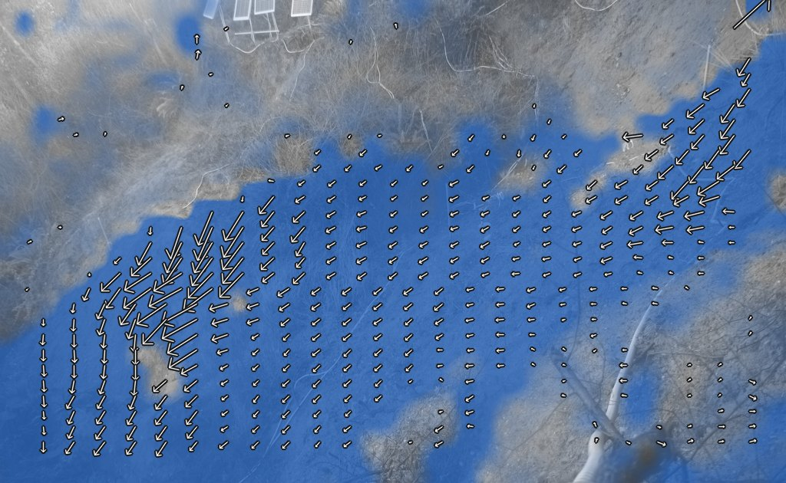
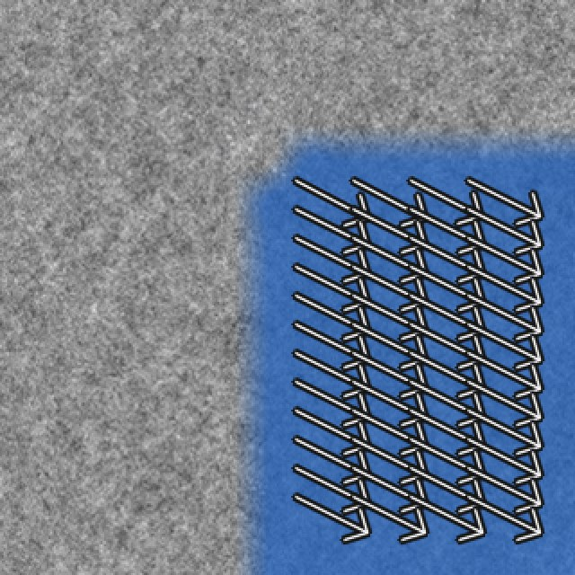
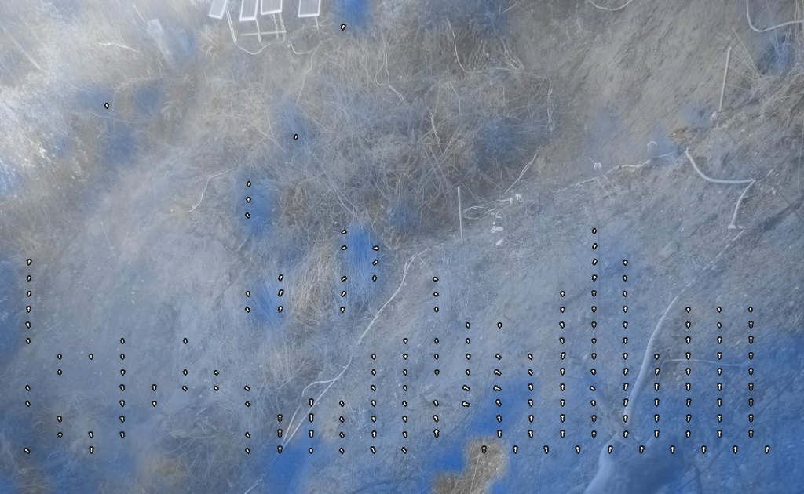
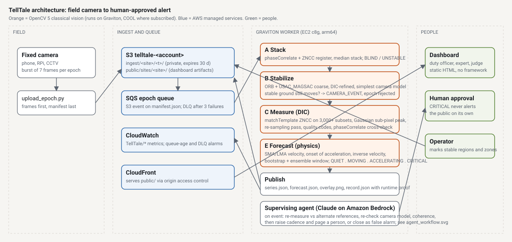
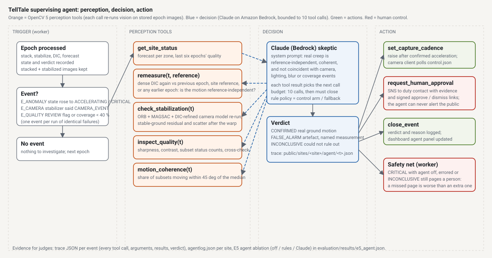

A camera that forecasts landslides
TellTale stacks bursts from any fixed camera, removes the camera's own motion, measures ground creep to a hundredth of a pixel, forecasts the failure window, re-measures to verify it, and pages a person.
Classical OpenCV 5 vision with no neural network, the inverse-velocity method mines have used for decades, and a small AWS footprint. A person approves every public alert.

Watched slopes kill nobody
Creep-type slope failures give warning for days or weeks. Where the ground is watched, people leave in time. Where it is not, the same physics plays out unread.
Bingham Canyon, Utah
Monitoring predicted when the pit wall would fail, and the area was evacuated beforehand. About 65 million m³ came down. No one was hurt.
Brienz, Switzerland
The village was evacuated on a forecast stated as a window, May 15 to June 1. Two million m³ fell on June 15.
Wayanad, India
No deformation monitoring. About 290 to 400 people died, depending on the count.
The difference is an instrument: ground-based radar, costly enough that most mines run one unit per site. Half of the people hit by landslides in the last five years got no warning at all. TellTale applies the same physics to a 30 to 50 USD camera, in daylight, for creep-type failures, and says clearly when it cannot see.
What happens to every burst of photographs
- Capture. A fixed camera photographs the slope in bursts of seven frames, a few times a day.
- Stack. The frames are registered and median-stacked. Heat shimmer averages toward zero; real movement does not.
- Stabilise. The operator marks ground that cannot move. Features there give the camera's own motion, which is removed. If that ground still appears to move, the epoch is rejected as a camera event: the single rule that removes the largest class of false alarms.
- Measure. Thousands of small patches are matched against the reference with normalised cross-correlation and refined to a hundredth of a pixel. Patches without texture or with ambiguous matches are excluded, never guessed.
- Forecast. Displacement becomes velocity. Once acceleration is sustained and statistically significant, one over velocity falls toward zero along a line; where it crosses the time axis is the forecast, given as a window.
- Verify and decide. A bounded agent re-runs OpenCV on the stored images to rule out the camera, the light and the lens. If the motion holds, a duty contact gets approve and dismiss links. Nothing reaches the public without that decision.
What the evidence says
Every number below comes from a script in the repository, run from a clean clone. Synthetic results are labelled as synthetic.
| Test | Result |
|---|---|
| A real landslide, USGS Mukilteo bluff | 2 of 2 documented movement periods the camera could see were flagged, with 0 false acceleration alarms across 147 quiet days in each of three zones. The wet-lens months were rejected as blurred, not read as quiet. |
| Public benchmark, SEM 2D DIC Challenge | 0.0047 px mean error on Sample 1, the best of TellTale, Farneback flow and Lucas-Kanade; within 0.01 px of the best on the noisier sets. |
| Synthetic sub-pixel accuracy | 0.006 to 0.010 px mean absolute error across noise and lighting, with bias under 0.003 px. |
| Synthetic collapse, through the cloud path | True failure at t = 50; forecast 50.3. With a fixed reference, coarse-to-fine correlation follows 28 px of motion at 0.007 px error. |
| Confounders and the agent | Camera bump, lighting step and fog raise no false alarm. The agent closes every camera-distortion event as a false alarm and pages a person 42 time units before failure, where thresholds alone page at 3. |
| Real slopes that failed | Replayed on six published monitoring records that ran to failure (Preonzo, Arvigo, Vajont, Hogarth, Veslemannen), the unchanged forecast reached CRITICAL before every one; its last window contained the failure at three of four sites. It also raised twelve early alarms that settled, which is why a person decides. |
| Cost on AWS Graviton | On one c8g.large, COOL's OpenCV 5.1 processes 1,964 epochs an hour (0.041 USD per 1,000 epochs) and the stock OpenCV 5.0 wheel 2,094 (0.038 USD). Either is about 1.5 times faster and 40 percent cheaper than a matched x86 instance. About 1.40 USD of cloud cost per slope per month in a 50-slope district. |


The system on AWS
A camera uploads bursts to S3. A queue feeds a Graviton worker running OpenCV 5. Results reach this dashboard through CloudFront; alerts go out through SNS; human decisions come back through signed links to a Lambda function. One CloudFormation template builds all of it.

When the instrument raises an event, the supervising agent, Claude on Amazon Bedrock, can only answer by calling OpenCV again. Each result decides its next call.

What it cannot do
- Brittle and liquefaction failures can fail without surface creep. TellTale will not warn of those.
- Night, fog, heavy rain and a wet lens blind the camera. Those epochs are reported as blind or blurred and the forecast's uncertainty widens; they are never shown as no movement.
- A camera standing on the moving ground produces camera events on the days that matter. Mount it off the slide.
- Vegetation decorrelates over seasons; coverage drops and the reference has to be chained or refreshed.
Questions people ask
Why not satellites?
Satellite radar revisits every few days to weeks, loses coherence on vegetation, and cannot follow the final hours to days of acceleration. A camera on site measures every few hours for the cost of a phone.
What camera do I need?
Any fixed camera with a stable mount and a view of the slope: an old phone, a Raspberry Pi camera, or existing CCTV. Longer focal lengths give finer resolution; a lens hood and heater keep it dry.
What do the time units mean?
Whatever the site uses: hours for an excavation, days for a natural slope, minutes for the tabletop demonstration. The physics is the same.
Who sees the alert?
The duty contact configured for the site receives critical messages with approve and dismiss links. Every decision is logged with its time and source.
Is anyone's privacy affected?
Cameras look at ground and structures. There is no person detection or face processing anywhere in the code, and raw images expire after 30 days.
Words used on the dashboard
- Epoch
- One burst of frames at one time.
- Subset
- A small image patch matched between epochs.
- ZNCC
- Zero-normalised cross-correlation, a match score unaffected by brightness changes.
- Coverage
- The share of subsets that passed quality checks.
- Onset of acceleration
- The first epoch of a sustained, statistically significant speed-up.
- Inverse velocity
- One divided by velocity; for creep it falls in a line to zero at failure.
- Camera event
- Ground marked as stable appeared to move, so the camera, not the slope, is suspect.
- Blind, blurred
- Too dark, foggy or wet to measure. Reported, not hidden.